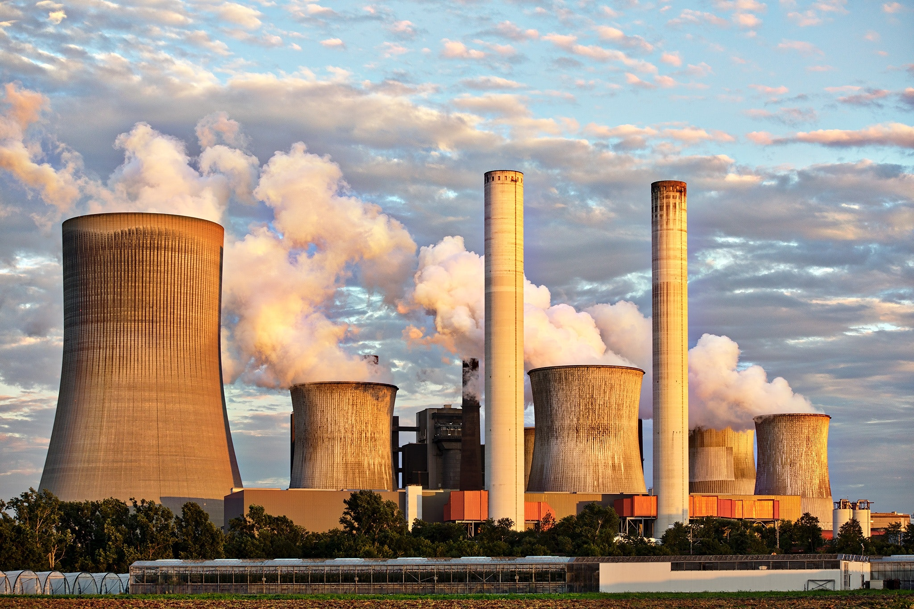

Plastic Pollution
According to the Kuwait Institute for Scientific Research, the amount of plastic waste in Kuwait is estimated at about 18 percent of total solid waste, or around 200,000 tons annually.
Plastic Pollution

Plastic Pollution
Plastic pollution is the accumulation in the environment of synthetic plastic products to the point that they create problems for wildlife and their habitats as well as for human populations. It can alter habitats and natural processes, reducing ecosystems' ability to adapt to climate change, directly affecting millions of people's livelihoods, food production capabilities and social well-being.
Solutions Learn MoreAir Pollution
Air Pollution
Pollution enters the Earth's atmosphere in many different ways. Most air pollution is created by humans, taking the form of emissions from factories, cars, planes, or aerosol cans. Second-hand cigarette smoke is also considered air pollution. These man-made sources of pollution are called anthropogenic sources.
SolutionsWater Pollution

Water Pollution
Water has the power to transform people’s lives, by reducing health risks in their living conditions, and by broadening economic opportunities for vulnerable communities. All forms of pollution eventually make their way to water. Air pollution settles onto lakes and oceans. Land pollution can seep into an underground stream, then to a river, and finally to the ocean. Thus, waste dumped in a vacant lot can eventually pollute a water supply.
Solutions